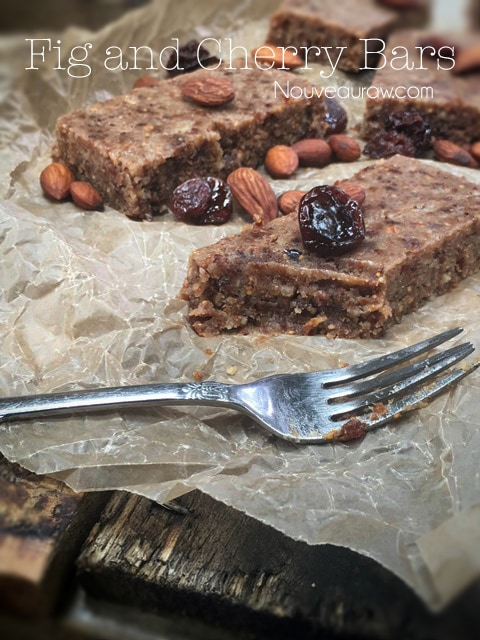
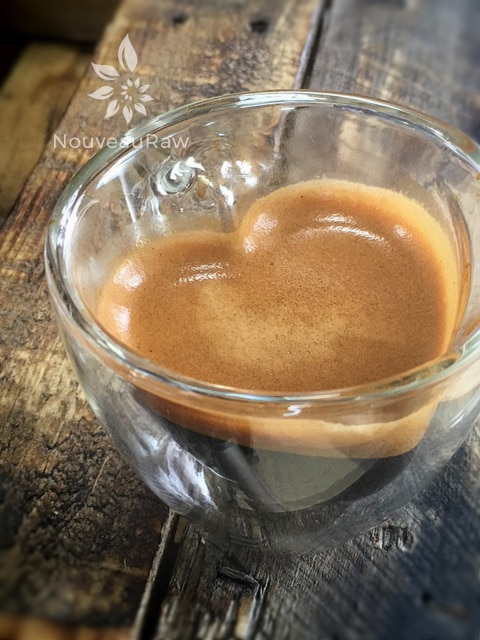
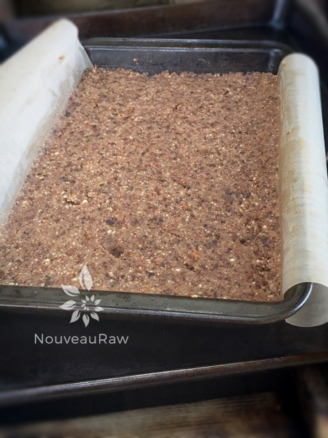
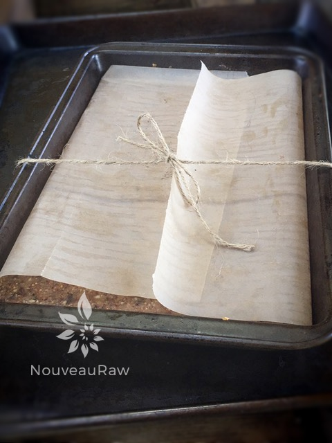
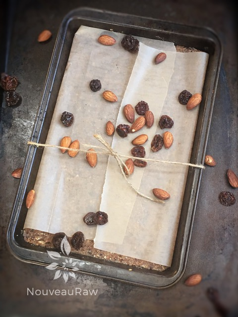
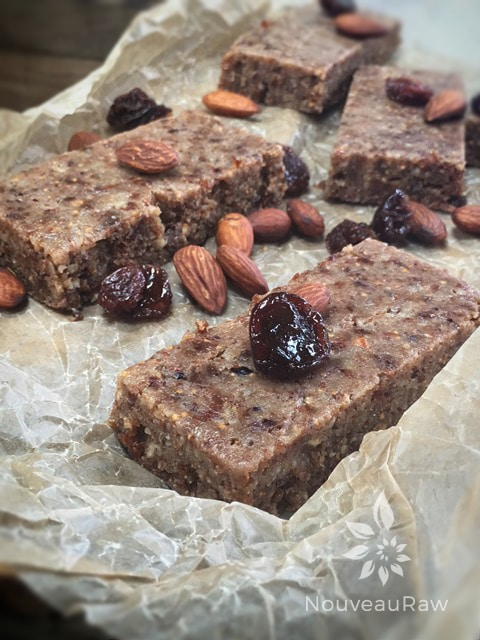

Fig and Cherry Bars

~ raw, vegan, gluten-free, Paleo ~
Don’t these Raw Fig and Cherry Bars look just heavenly? I just want to sink my teeth into them. Well, OK, I did! I have made these many times and find that I love them with dried cranberries as well as the dried cherries. I also have used raw almond butter in place of the tahini. That’s the beauty of raw; you can easily substitute ingredients and create new masterpieces!
Bone Strengthening
Did you know that figs are a great source of calcium, which is one of the essential components in strengthening bones? It is also rich in phosphorus, which encourages the bone formation and spurs regrowth if there is any damage or degradation to bones. I always knew how vital calcium was but never thought of getting it from figs. (1)
I do like figs, but I have to say that I LOVE cherries. The health benefits of cherry include a boost to eye care, a stronger immune system, and improved digestion. Speaking of digestion… I must shamefully admit that I tend to eat fresh cherries until my tummy hurts. They are my weakness. Willpower goes right out the door and doesn’t even bother to look back. hehe
When it comes to making these bars, you can either dehydrate them or not. If you decide not to dry them, you will want to keep them stored in the fridge or freezer. They will be sticky but ooooh so yummy.
By dehydrating them, you will extend the shelf life, plus they will be finger-friendly, meaning… not so sticky. I like to have snacks on hand that can hit the road with us. I always, always, always pack snacks to eat for Bob. He is my grazer. So when I pack up bars such as these, I like to pop them in an old eyeglass case. That way, it can be thrown in my purse or bag, and it won’t get squished. Well, it’s time, time to dirty some dishes and get busy. I mean You, not me, I already did that. Hehe, Enjoy, and many blessings.
 Ingredients:
Ingredients:
yields 11 1/2 x 9″ tray
- 2 cups raw almonds, soaked
- 1/4 cup ground flax seeds
- 1/4 tsp Himalayan pink salt
- 1 1/4 cups dried figs, stems removed and diced
- 1 cup organic dried cherries
- 2 – 4 Tbsp maple syrup
- 2 Tbsp raw tahini or almond butter
- 2 organic lemons, zest only
Preparation:
- Line a tray with plastic wrap or parchment paper. Set aside.
- In the food processor, combine the nuts, flax, and salt. Process until it reaches a small pebble size.
- I often go by sound… when I first start the food processor, it sounds like rocks spinning around. As the nuts break down, it turns into a gentle hum, which indicates that they are ready.
- Do not over process, however, or you’ll end up with nut butter!
- Add the figs, cherries, sweetener, tahini or almond butter, and lemon zest. Process again until well blended, and the mixture resembles a moist “dough” (it will form a ball).
- Note: if the dried figs and cherries are hard, re-hydrate them in warm water until soft. Drain the soak water and proceed with the recipe.
- Pinch a bit of the mixture between your fingers to test the consistency. If it sticks together and feels slightly moist, it’s ready.
- Turn the mixture into the pan and press down very firmly with the palm of your hand or the back of a metal spatula. The mixture should be very compact and solid.
- Refrigerate or freeze until firm.
- Cut into 12 bars and store in an airtight container in the refrigerator or wrap each bar individually in plastic wrap.
- The bars will keep refrigerated for up to two weeks. These will also keep well in the freezer for at least a month.
Dehydrator method:
- If you choose to dry them, place the cut bars on the mesh sheet that comes with the dehydrator and dry at 145 degrees (F) for 1 hour, then reduce to 115 degrees (F) for up to 10 hours or so.
- You can dry them as long or as little as you want; it just depends on the texture that you like. The bars will never dry out completely.
- Wrap individually for the ease of snacking.
The Institute of Culinary Ingredients™
- To learn more about maple syrup by clicking (here).
- What is Himalayan pink salt, and does it matter? Click (here) to read more about it.
- Learn how to make your raw almond butter by clicking (here).
Culinary Explanations:
- Why do I start the dehydrator at 145 degrees (F)? Click (here) to learn the reason behind this.
- When working with fresh ingredients, it is essential to taste test as you build a recipe. Learn why (here).
- Don’t own a dehydrator? Learn how to use your oven (here). I do, however honestly believe that it is a worthwhile investment. Click (here) to learn what I use.
Bob made me an exclusive shot of espresso for the bar.





© AmieSue.com